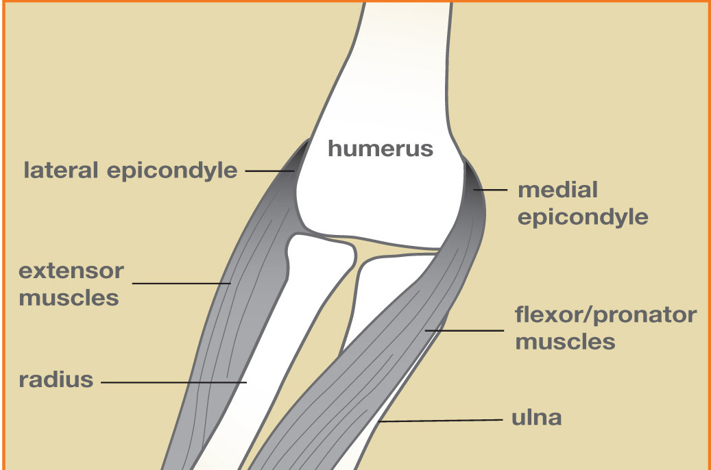
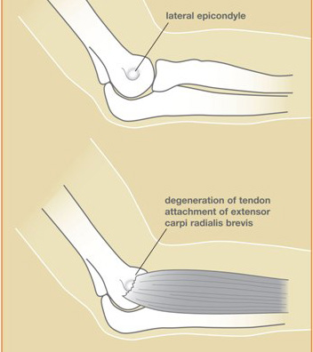

Kondisyon
Koud Tenis ak Koud Golf
Doulè sou deyò (koud tenis) oswa anndan (koud golf) koud la ki soti nan iritasyon kote tandon avanbra yo tache.

Illustration © American Society for Surgery of the Hand
Kisa koud tenis ak koud golf ye?
Misk avanbra yo ki bouje ponyèt ou ak dwèt ou tache nan de ti pwen zo sou koud la. Pwen ki deyò a yo rele epikondil lateral, epi pwen ki anndan an se epikondil medyal la. Lè tandon yo ki tache nan pwen sa yo iritye, rezilta a se doulè nan koud la ki vin pi grav lè w ap kenbe, leve, oswa tòde.
- Koud tenis (epikondilit lateral) se doulè sou deyò koud la.
- Koud golf (epikondilit medyal) se doulè anndan koud la.
Malgre non yo, pifò moun ki gen youn nan kondisyon sa yo pa jwe espò sa a. Kenbe bagay, tape nan klavye, pote, ak leve nan lavi chak jou se kòz ki pi komen.
Sentòm komen
- Doulè ak sansiblite nan pwen zo a sou deyò oswa anndan koud la
- Doulè lè w ap kenbe, bay lanmen, vire yon pòtay, oswa leve yon tas kafe
- Yon kenbe ki fèb oswa doulè ki desann nan avanbra a
- Rèdite ak doulè lè w fèk leve nan maten
Poukisa sa rive?
Epikondilit se yon kondisyon itilize twòp. Ti tansyon nan kote tandon an tache yo pa geri nòmalman epi yo akimile piti piti rive nan yon iritasyon dolore ak kwonik. Faktè risk komen yo genyen:
- Travay oswa lwazi ki mande kenbe, bouje ponyèt, oswa leve repete
- Yon ogmantasyon sibit nan aktivite, sitou yon nouvo espò oswa yon pwojè lakay
- Laj ant 35 ak 55 ane, lè tandon yo pèdi yon ti elastisite

Illustration © American Society for Surgery of the Hand
Opsyon tretman
Bon nouvèl: apeprè 90% moun yo vin pi byen san operasyon. Rekiperasyon an souvan mezire an mwa, pa an semèn.
Tretman san operasyon
- Chanjman aktivite. Pran yon poz nan aktivite ki deklanche doulè a, oswa chanje kijan ou kenbe bagay, se souvan etap ki pi enpòtan an.
- Anti-enflamatwa ak glas. Ibipwofèn oswa naprozèn san preskripsyon ka ede, ansanm ak glas apre aktivite.
- Sentiwon kontrèfòs oswa atèl ponyèt. Yon sentiwon amòti anba koud la oswa yon atèl rijid sou ponyèt ka dekòche tandon iritye a epi bay anpil pasyan soulajman imedyat.
- Terapi men. Etiraj ak ranfòsman eksantrik, gide pa yon terapis, se tretman san operasyon ki pi efikas epi jeneralman li fèt pandan 6 a 8 semèn.
- Piki esteroyid. Yon piki kòtikostewoyid ka diminye doulè alakoudan. Li jeneralman rezève pou ka ki pa vle ale paske efè a souvan pase apre kèk mwa.
Tretman chirijikal
- Debridman tandon. Si doulè a la pandan 6 a 12 mwa malgre bon tretman san operasyon, yon ti operasyon anbilatwa ka retire tisi sikatrize e iritye a nan kote tandon an tache. Pifò pasyan jwenn bon oswa ekselan soulajman doulè, menm si rekiperasyon konplè a pran plizyè mwa.
Sa pou w tann nan vizit ou
Dr. Barrera ap egzamine koud la, jwenn kote ki sansib la, epi teste ki mouvman ki rapwoche doulè w. Imaj jeneralman pa nesesè pou yon ka tipik, men yon radyografi oswa yon iltrason ka pran si dyagnostik la pa klè. Ansanm n ap bati yon plan ki prèske toujou kòmanse ak chanjman aktivite, yon atèl, ak yon ti tan terapi.
Rele nou si koud la vin wouj, cho, oswa trè anfle, si ou gen angoudisman oswa pikotman k ap gaye nan men an, si doulè a soti nan yon sèl blesi sibit olye yon itilize twòp ki piti piti, oswa si ou pa ka lonje oswa pliye koud la nòmalman.
Gade tou
Kesyon?
Rele kote biwo ou a pou kesyon ki pa ijan:
- NYU Langone Laurelton · 646-501-4950
- NYU Orthopedic, Woodside · 929-429-3222
- NYU Orthopedic, Richmond Hill · 718-206-6923
- Jamaica Hospital Ambulatory Care Center (ACC) · 718-301-0720
Gade enfòmasyon kontak biwo nou yo pou adrès ak nimewo faks.